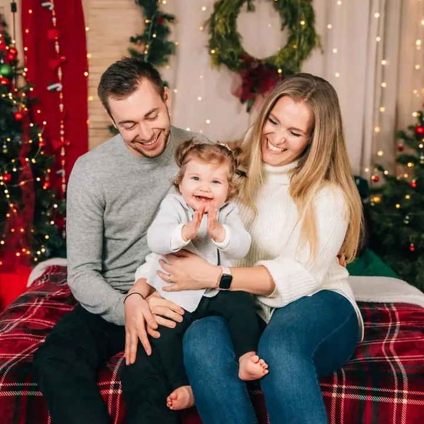
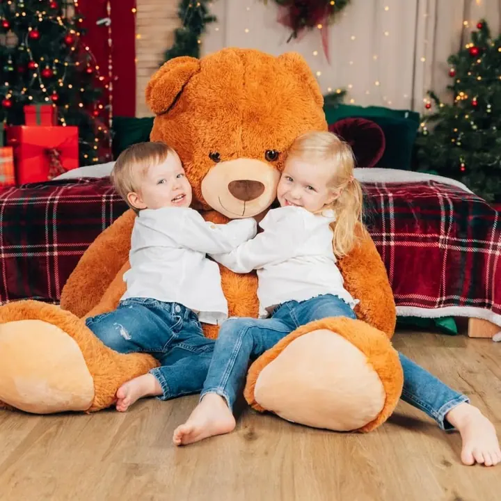
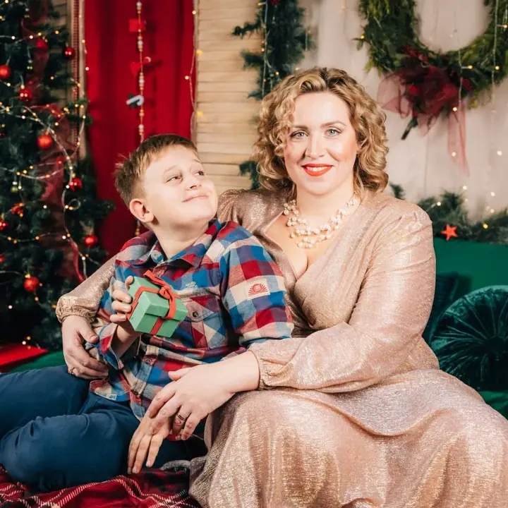
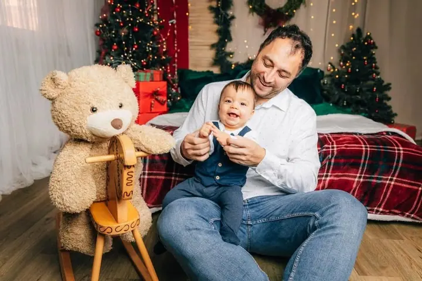
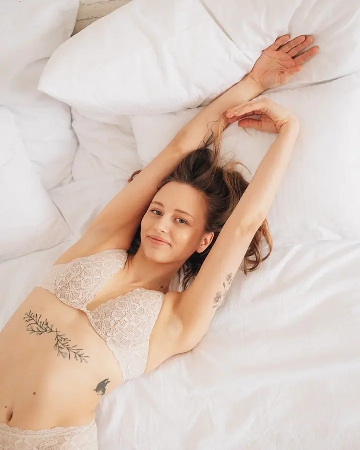
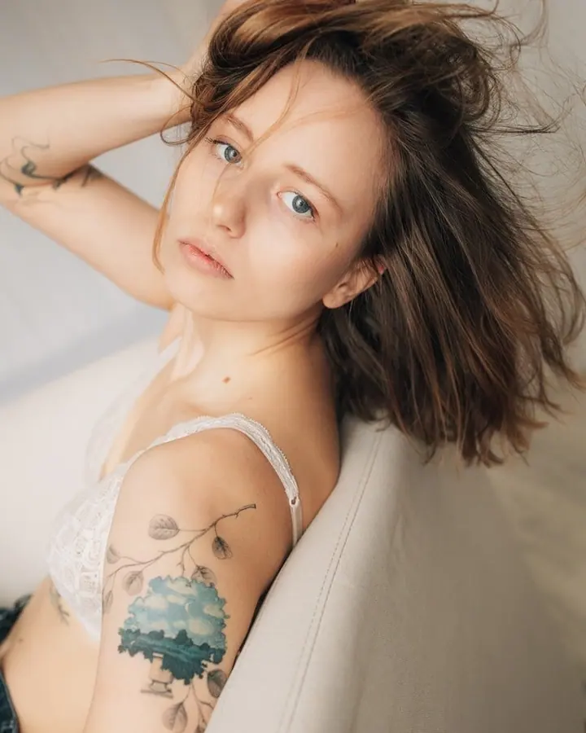

jedna
Rodinné focení
Procházka, houpání, válení na dece a lechtání trávou pod nosem. Focení, které vás i vaše děti bude bavit, venku nebo v ateliéru v Rosicích.

Svatební, rodinná a lifestyle fotografka · Rosice, Brno a okolí

Jmenuji se Soňa Štroblová a jsem lifestyle fotografka z Rosic u Brna. Fotím svatby, rodiny a páry a vždycky mi byly bližší fotky, na kterých jsou v popředí emoce a dynamika. Žádné pózy a strojené úsměvy, jen vy a to, co vás spojuje.
Více o mně
Co fotím
jedna
Procházka, houpání, válení na dece a lechtání trávou pod nosem. Focení, které vás i vaše děti bude bavit, venku nebo v ateliéru v Rosicích.
dvě
Pro snoubence i všechny zamilované dvojice. Předsvatební focení je taková zkouška nanečisto, jen bez svatebního shonu, šatů a kytky.
Nafotím všechno důležité od ranních příprav přes obřad, gratulace a první tanec až po večerní párty. Bez zdlouhavého pózování, zato s momentkami a upřímnými emocemi.
Balíček těhotenského focení a newborn focení u vás doma za zvýhodněnou cenu. Termín pro miminko domluvíme rovnou při rezervaci těhotenského.

Žádné pózy a strojené úsměvy, jen vaše opravdové emoce.


Za objektivem
Kouzlu lifestylové fotografie jsem propadla prakticky hned po pořízení prvního foťáku. Prošla jsem si různými zaměstnáními kancelářské povahy, ale nic mě nenaplňovalo tak jako focení. Je to moje láska s velkým L a vidím v něm obrovský smysl.
Jsem máma tří dětí a manželka trpělivého manžela, takže vím, že děti na focení nemusí mít zrovna náladu. Dokážu se vcítit do jejich potřeb a focení s nimi pojmout jako zábavu. Jak říkám: čím víc dětí, tím víc lifestyle!
Ke každému focení přistupuji individuálně. Je pro mě důležité, abyste se před objektivem cítili uvolněně, protože vaše naladění je na fotkách vidět. Ráda hledám to nejlepší světlo a zkouším netradiční úhly pohledu.
Soňa
Napište mi přes formulář nebo na e-mail, kdy a co byste rádi nafotili. Ozvu se vám s nabídkou volných termínů.
U svatby si domluvíme schůzku, nejlépe osobní, a probereme vaše představy i průběh dne. U rodinného focení vymyslíme místo a čas, který bude vyhovovat hlavně dětem.
Žádné zdlouhavé pózování. Projdeme se, budeme se smát a dovádět a já mezitím fotím to, co se mezi vámi skutečně děje.
Upravené fotografie dostanete ve vlastní online galerii. Z vybraných fotek si můžete nechat udělat i tisk nebo fotoknihu.
Portfolio
Otázky
Určitě. Spoustu lidí focení stresuje a já jim ráda dokážu, že opak je pravdou. Nebudu vás nutit do póz, stačí si focení užít.
Sama jsem máma tří dětí, takže to znám. Focení pojmeme jako hru, s houpáním, lechtáním a válením na dece. Je důležité, aby byly děti v pohodě.
Newborn fotím nejpozději do dvou týdnů po narození, a to u vás doma. Proto doporučuji domluvit termín rovnou při rezervaci těhotenského focení v balíčku Lifestyle maminka.
Hodinu ve vyzdobeném ateliéru v Rosicích s několika scénami, šatnu s dámskými i dětskými šaty a 20 upravených fotografií dodaných do 2 týdnů. Balíček stojí 3 500 Kč, termín potvrzuje rezervační poplatek 700 Kč.
Napište pár vět o tom, co si představujete. ahoj@sonastroblova.cz